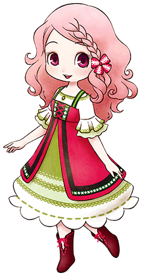

珀布莉

莉莉娅的女儿，里克的妹妹。
有些孩子气有些自我中心，但会为母亲着想。
经常和梅以及优一起玩。
简略说明
- 登场：最初
- 住所：小鸡与莉莉娅
- 性别：女
- 生日：夏3日（夏10日）
- 家庭成员：母亲（莉莉娅）、哥哥（里克）
喜欢与讨厌的物品
- 最喜欢：玉子烧、蛋包饭、印尼炒饭、石锅拌饭
- 很喜欢：草莓、鸡蛋、水煮蛋、曲奇、布丁、玛德莲蛋糕、钻石
- 喜欢：凤梨、牛奶、炖菜
- 普通：胡萝卜、温泉蛋、芝士蛋糕
- 讨厌：芜菁、南瓜、蔬菜汁、年糕
- 很讨厌：山葡萄水、超辣青椒炒肉丝
行程
| 状况 |
AM |
PM |
AM |
| 6 |
7 |
8 |
9 |
10 |
11 |
12 |
1 |
2 |
3 |
4 |
5 |
6 |
7 |
8 |
9 |
10 |
11 |
12 |
| 单身 |
一~六 |
养鸡场1楼 |
泉边 |
养鸡场1楼 |
养鸡场2楼 |
| 一~六（雨、雪） |
养鸡场1楼 |
养鸡场2楼 |
| 日 |
养鸡场1楼 |
教堂 |
广场 |
养鸡场1楼 |
养鸡场2楼 |
| 日（雨、雪） |
养鸡场1楼 |
教堂 |
养鸡场1楼 |
养鸡场2楼 |
| 日（夏） |
养鸡场1楼 |
海边 |
养鸡场1楼 |
养鸡场2楼 |
| 婚后 |
一~六 |
自家 |
养鸡场1楼 |
自家 |
| 日 |
自家 |
很喜欢鸡和蛋料理
珀布莉最喜欢蛋类料理。
如果有了平底锅的话，推荐用鸡蛋和油做「玉子烧」。
因为鸡蛋的品质和好感度没关系，所以送「普通品质的蛋」也没关系。
如果想和她的关系更进一步，那么就好好培养自己牧场里的鸡吧。
扩建并饲养8只鸡，鸡的平均好感度高于150（6 ）的话珀布莉的好感度也会上升。
）的话珀布莉的好感度也会上升。
满足一定条件后好感度上升
| 鸡的平均好感度 |
珀布莉的好感度 |
| 150以上 |
+2500 |
| 180以上 |
+2500 |
| 210以上 |
+2500 |
| 230以上 |
+2500 |
| 250以上 |
+2500 |
※ 主人公牧场里必须饲养8只鸡以上
※ 只有第一次达成时才会上升
※ 尚未确认饲养安哥拉兔是否触发里克好感度上升
居民事件
恋爱事件
 相遇好感度0以上
相遇好感度0以上
- 星期：三、五
- 天气：晴
- 时间：AM11:20～PM6:00
- 地点：小镇南边（养鸡场附近）
- 其他条件：
珀布莉在养鸡场里
背包里有空位
- 结果：
喜欢 → +3000
讨厌 → -2000
朋友1好感度5000以上
- 星期：一、二、三、四、五、六
- 天气：晴
- 时间：AM6:00～AM12:00
- 地点：主人公的牧场
- 其他条件：背包里有空位
- 结果：
我很忙不行 → -2000
可以哦 → +3000
 朋友2好感度10000以上
朋友2好感度10000以上
- 星期：日
- 天气：晴
- 时间：AM10:00～PM1:00
- 地点：教堂
- 其他条件：
夏天以外
拥有大背包或整理架
背包里有空位
- 结果：
一起玩 → +3000 （梅和卡特亲密度+20，优亲密度-10）
有事情 → 无变化 （梅亲密度+20，优和卡特亲密度-10）
 朋友3好感度20000以上
朋友3好感度20000以上
- 星期：一、三、四、五、六
- 天气：晴
- 时间：AM11:20～PM1:00
- 地点：养鸡场1楼
- 其他条件：
夏天以外
珀布莉、里克、莉莉娅在养鸡场里
背包里有空位
- 结果：
珀布莉说的是对的 → +3000（里克亲密度-10，莉莉娅亲密度+20）
里克说的是对的 → -2000（里克亲密度+20，莉莉娅亲密度-10）
莉莉娅很困扰呢 → +3000（里克和莉莉娅亲密度+20）
 告白好感度30000以上
告白好感度30000以上 恋人/知己1好感度40000以上
恋人/知己1好感度40000以上
- 星期：-
- 天气：晴
- 时间：AM10:00～PM1:00
- 地点：主人公的牧场
- 其他条件：背包里有空位
- 结果：
珀布莉的身手出人意料的不错 → +3000
靠不住的样子真让人担心 → -2000
 恋人/知己2好感度50000以上
恋人/知己2好感度50000以上
- 星期：一、二、三、五、六、日
- 天气：晴
- 时间：AM10:00～PM1:00
- 地点：小镇南边
- 其他条件：-
- 结果：
给别人增加烦恼很高兴吗 → +3000
给我正常点 → -2000
 求婚好感度60000以上
求婚好感度60000以上结婚·知己之仪
- 求婚成功的一周后。
- 结果：
参加仪式的居民亲密度+20
里克和莉莉娅亲密度达到最大值
称呼
- 和对象结婚以后。
- 结果：
对方会以自己选择的称呼来叫自己